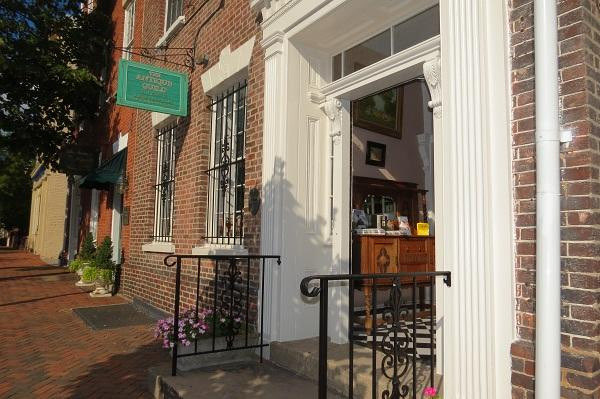
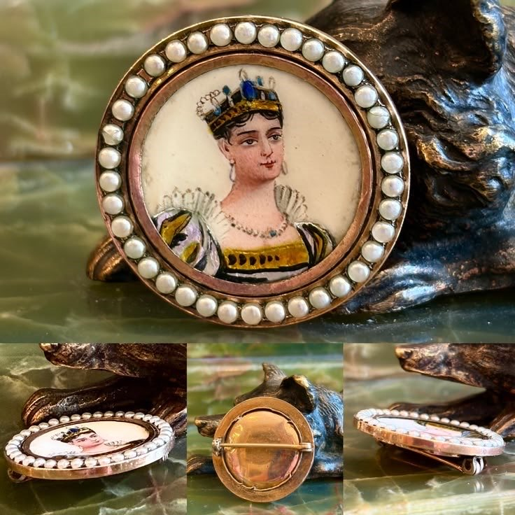
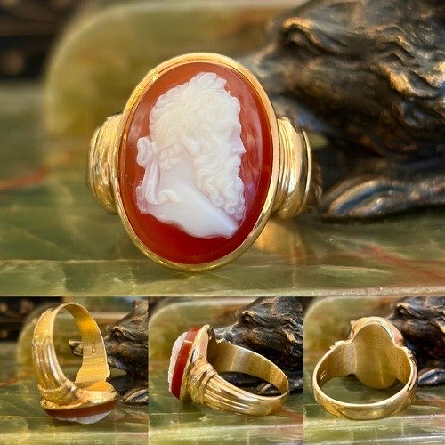
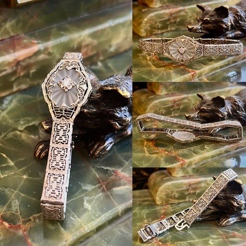
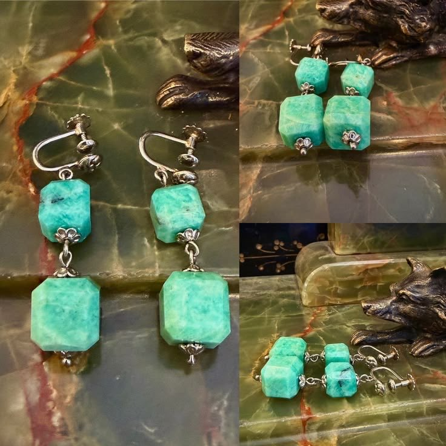
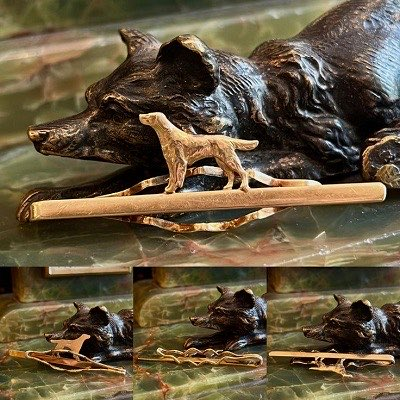
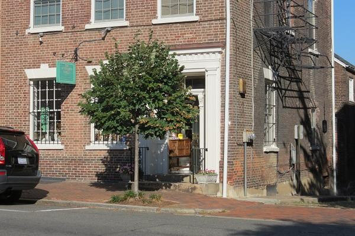
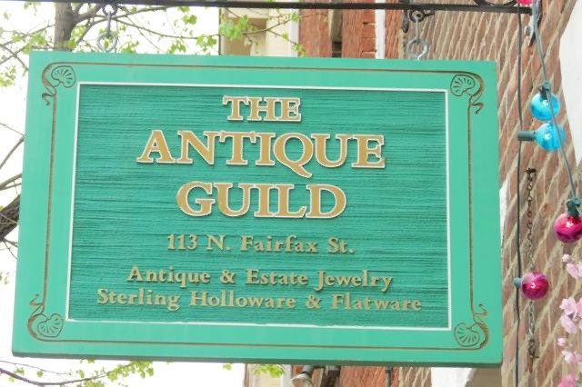

c. 1905
14kt stone cameo ring of Zeus
Accented shoulders and reeded shank, with the hatchet hallmark of Jones & Woodland. Size 12.
$2,250Cameos
A small, family owned shop in the heart of Old Town Alexandria. Since 1980 we have kept an exceptional selection of Victorian, Edwardian, Art Deco and estate jewelry — and fine silver for the table and for the pleasure of it.




At this same location on North Fairfax Street.
A small shop — so you get our full, personal attention.
Thursday to Saturday, 11 to 5. Other days by appointment.
Ground floor, beside cobblestone Ramsay Alley.
01 — The collections
We adore fine silver, especially dining accoutrements, and objets d’art kept simply for the pleasure of adornment. We fancy the figural in everything — from European figurines of cupids to sterling patterns with heraldic heads and Art Nouveau flowers.

Victorian-era pieces to estate jewelry — the unique in antique, estate and vintage, at most reasonable prices.
View jewelry BSilver
Georgian silver, American coin silver, flatware, serving pieces and hollowware — for setting a fabulous table.
View silver COther treasures
Porcelains and ceramics, bronzes, and drinking and smoking accessories. We are constantly on the hunt for treasures.
View treasures02 — From the cases
Each one a miniature work of art. This is only a small grouping of the inventory — the full selection is in the shop.





Prices as listed by the shop. Antiques sell one at a time — please call 703-836-1048 or email to check that a piece is still available.



03 — The shop
The Antique Guild first opened in 1980 at this location and is a family owned business. We occupy the ground floor of an 18th-century building across from Market Square and City Hall, with the cobblestone Ramsay Alley running beside the shop.
Once inside, you will notice the figural animal theme — we love birds, dogs, and all kinds of beasties. We limit the shop to six customers at a time, because of its small size and to give you the best personal attention possible.
04 — Good to know
Straight answers from the shop, so your visit — or your phone call — is an easy one.
Want to purchase an item Sunday to Wednesday? Email us or DM us on Instagram and we will arrange an appointment at the shop.
Leave us a message with any specific request — a pattern, a period, a particular piece. We are constantly on the hunt.
We ship jewelry and silver. No porcelain, glass, art work or furniture, and no international shipping.
Most major credit and debit cards — except Discover. Trade-backs for credit with your original receipt.
05 — Visit
In the heart of Old Town, opposite the underground parking entrance at Market Square, where the Farmers’ Market is held every Saturday morning.
Closed for most legal holidays, and sometimes for buying trips and vacations — best to call beforehand, just in case: 703-836-1048.
Finding us
06 — FAQ
Anything else? Call us at 703-836-1048.
The Antique Guild first opened in 1980 at this location and is a family owned business.
We occupy the ground floor of an 18th-century building across from Market Square and City Hall in Old Town Alexandria: 113 North Fairfax Street, in the 100 block between the Ramsay House Visitors’ Center and the historic Carlyle House.
We are three streets up from the river and four streets down from Washington Street. Call 703-836-1048 if you need more directions.
Thursday through Saturday, 11 am to 5 pm. We close for most legal holidays and for buying trips — the outgoing phone message gives any altered hours, so if in doubt, please call 703-836-1048 beforehand.
If you would like to purchase an item, we can arrange an appointment at the shop during the rest of the week.
Primarily antique & estate jewelry and fine silver, though we strive to stock the funky and the unusual. Once inside, you will notice the figural animal theme — we love birds, dogs, and all kinds of beasties.
Yes, most major credit cards and debit cards — except Discover.
We ship small items such as jewelry and silver. We do not ship fragile items such as porcelain and glass, or bulky items such as art work or furniture, and we do not ship internationally.
We trade back items for a credit with your original receipt and in the same condition as at the time of purchase. The trade back must be an even exchange or exceed the original purchase amount before sales tax. We do not refund the amount of the purchase.
We do not have the buying license required by the City of Alexandria to purchase antiques, but we can recommend other dealers who pay fair prices for items such as gold and silver.
07 — Contact
Email us, DM us on Instagram, or call with any questions. For a specific request, tell us what you are looking for.